InvokeAI Web Server#
Quick guided walkthrough of the WebUI's features#
While most of the WebUI's features are intuitive, here is a guided walkthrough through its various components.
Launching the WebUI#
To run the InvokeAI web server, start the invoke.sh/invoke.bat
script and select option (1). Alternatively, with the InvokeAI
environment active, run invokeai-web:
You can then connect to the server by pointing your web browser at
http://localhost:9090. To reach the server from a different machine on your LAN,
you may launch the web server with the --host argument and either the IP
address of the host you are running it on, or the wildcard 0.0.0.0. For
example:
or
The InvokeAI Web Interface#

The screenshot above shows the Text to Image tab of the WebUI. There are three main sections:
-
A control panel on the left, which contains various settings for text to image generation. The most important part is the text field (currently showing
fantasy painting, horned demon) for entering the positive text prompt, another text field right below it for an optional negative text prompt (concepts to exclude), and a Invoke button to begin the image rendering process. -
The current image section in the middle, which shows a large format version of the image you are currently working on. A series of buttons at the top lets you modify and manipulate the image in various ways.
-
A gallery section on the right that contains a history of the images you have generated. These images are read and written to the directory specified in the
INVOKEAIROOT/invokeai.yamlinitialization file, usually a directory namedoutputsinINVOKEAIROOT.
In addition to these three elements, there are a series of icons for changing global settings, reporting bugs, and changing the theme on the upper right.
There are also a series of icons to the left of the control panel (see highlighted area in the screenshot below) which select among a series of tabs for performing different types of operations.
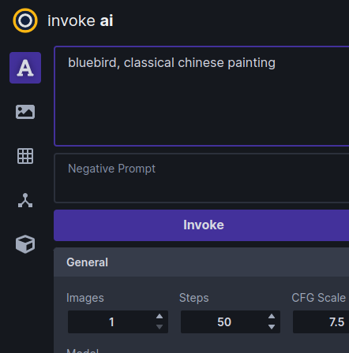
From top to bottom, these are:
- Text to Image - generate images from text
- Image to Image - from an uploaded starting image (drawing or photograph) generate a new one, modified by the text prompt
- Unified Canvas - Interactively combine multiple images, extend them with outpainting,and modify interior portions of the image with inpainting, erase portions of a starting image and have the AI fill in the erased region from a text prompt.
- Node Editor - (experimental) this panel allows you to create pipelines of common operations and combine them into workflows.
- Model Manager - this panel allows you to import and configure new models using URLs, local paths, or HuggingFace diffusers repo_ids.
Walkthrough#
The following walkthrough will exercise most (but not all) of the WebUI's feature set.
Text to Image#
-
Launch the WebUI using launcher option [1] and connect to it with your browser by accessing
http://localhost:9090. If the browser and server are running on different machines on your LAN, add the option--host 0.0.0.0to theinvoke.shlaunch command line and connect to the machine hosting the web server using its IP address or domain name. -
If all goes well, the WebUI should come up and you'll see a green dot meaning
connectedon the upper right.
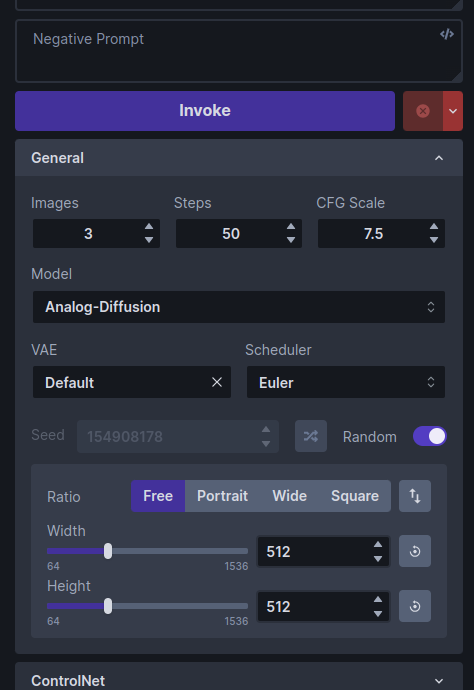
Basics#
-
Generate an image by typing bluebird into the large prompt field on the upper left and then clicking on the Invoke button or pressing the return button. After a short wait, you'll see a large image of a bluebird in the image panel, and a new thumbnail in the gallery on the right.
If you need more room on the screen, you can turn the gallery off by typing the g hotkey. You can turn it back on later by clicking the image icon that appears in the gallery's place. The list of hotkeys can be found by clicking on the keyboard icon above the image gallery.
-
Generate a bunch of bluebird images by increasing the number of requested images by adjusting the Images counter just below the Invoke button. As each is generated, it will be added to the gallery. You can switch the active image by clicking on the gallery thumbnails.
If you'd like to watch the image generation progress, click the hourglass icon above the main image area. As generation progresses, you'll see increasingly detailed versions of the ultimate image.
-
Try playing with different settings, including changing the main model, the image width and height, the Scheduler, the Steps and the CFG scale.
The Model changes the main model. Thousands of custom models are now available, which generate a variety of image styles and subjects. While InvokeAI comes with a few starter models, it is easy to import new models into the application. See Installing Models for more details.
Image Width and Height do what you'd expect. However, be aware that larger images consume more VRAM memory and take longer to generate.
The Scheduler controls how the AI selects the image to display. Some samplers are more "creative" than others and will produce a wider range of variations (see next section). Some samplers run faster than others.
Steps controls how many noising/denoising/sampling steps the AI will take. The higher this value, the more refined the image will be, but the longer the image will take to generate. A typical strategy is to generate images with a low number of steps in order to select one to work on further, and then regenerate it using a higher number of steps.
The CFG Scale controls how hard the AI tries to match the generated image to the input prompt. You can go as high or low as you like, but generally values greater than 20 won't improve things much, and values lower than 5 will produce unexpected images. There are complex interactions between Steps, CFG Scale and the Scheduler, so experiment to find out what works for you.
The Seed controls the series of values returned by InvokeAI's random number generator. Each unique seed value will generate a different image. To regenerate a previous image, simply use the original image's seed value. A slider to the right of the Seed field will change the seed each time an image is generated.
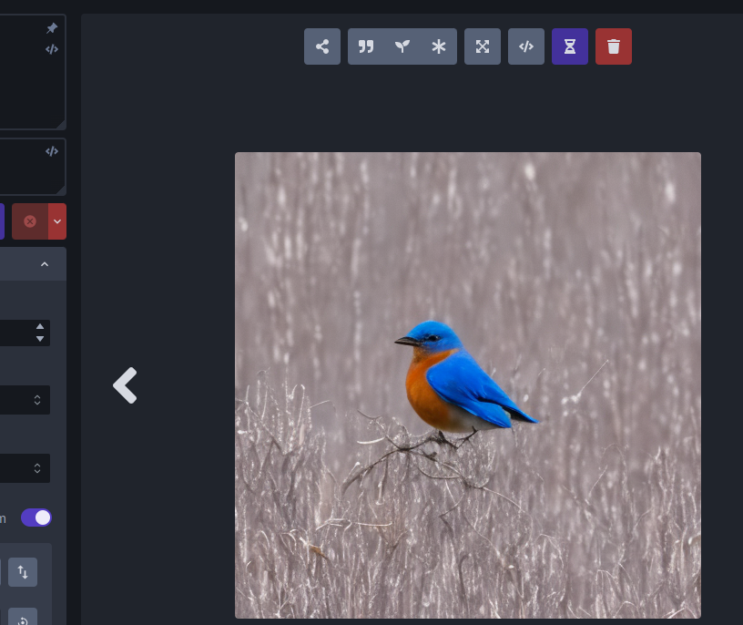
-
To regenerate a previously-generated image, select the image you want and click the asterisk ("*") button at the top of the image. This loads the text prompt and other original settings into the control panel. If you then press Invoke it will regenerate the image exactly. You can also selectively modify the prompt or other settings to tweak the image.
Alternatively, you may click on the "sprouting plant icon" to load just the image's seed, and leave other settings unchanged or the quote icon to load just the positive and negative prompts.
-
To regenerate a Stable Diffusion image that was generated by another SD package, you need to know its text prompt and its Seed. Copy-paste the prompt into the prompt box, unset the Randomize Seed control in the control panel, and copy-paste the desired Seed into its text field. When you Invoke, you will get something similar to the original image. It will not be exact unless you also set the correct values for the original sampler, CFG, steps and dimensions, but it will (usually) be close.
-
To save an image, right click on it to bring up a menu that will let you download the image, save it to a named image gallery, and copy it to the clipboard, among other things.
Upscaling#
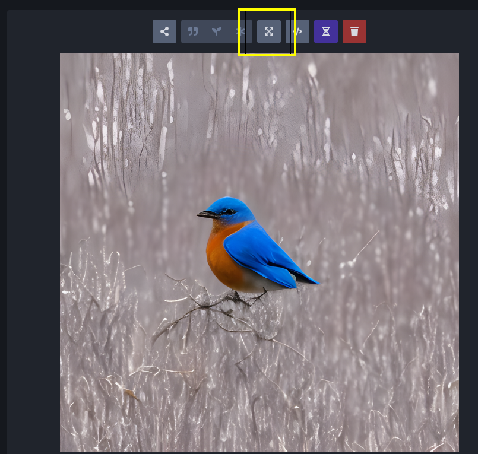
"Upscaling" is the process of increasing the size of an image while retaining the sharpness. InvokeAI uses an external library called "ESRGAN" to do this. To invoke upscaling, simply select an image and press the "expanding arrows" button above it. You can select between 2X and 4X upscaling, and adjust the upscaling strength, which has much the same meaning as in facial reconstruction. Try running this on one of your previously-generated images.
Image to Image#
InvokeAI lets you take an existing image and use it as the basis for a new creation. You can use any sort of image, including a photograph, a scanned sketch, or a digital drawing, as long as it is in PNG or JPEG format.
For this tutorial, we'll use the file named Lincoln-and-Parrot-512.png.
{kind=link}
-
Click on the Image to Image tab icon, which is the second icon from the top on the left-hand side of the screen. This will bring you to a screen similar to the one shown here:
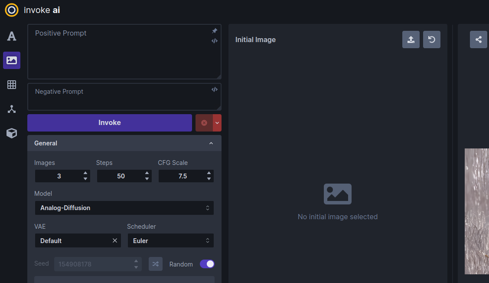
-
Drag-and-drop the Lincoln-and-Parrot image into the Image panel, or click the blank area to get an upload dialog. The image will load into an area marked Initial Image. (The WebUI will also load the most recently-generated image from the gallery into a section on the left, but this image will be replaced in the next step.)
-
Go to the prompt box and type old sea captain with raven on shoulder and press Invoke. A derived image will appear to the right of the original one:
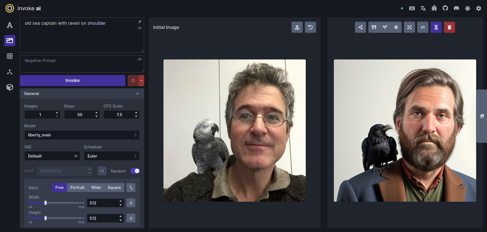
-
Experiment with the different settings. The most influential one in Image to Image is Denoising Strength located about midway down the control panel. By default it is set to 0.75, but can range from 0.0 to 0.99. The higher the value, the more of the original image the AI will replace. A value of 0 will leave the initial image completely unchanged, while 0.99 will replace it completely. However, the Scheduler and CFG Scale also influence the final result. You can also generate variations in the same way as described in Text to Image.
-
What if we only want to change certain part(s) of the image and leave the rest intact? This is called Inpainting, and you can do it in the Unified Canvas. The Unified Canvas also allows you to extend borders of the image and fill in the blank areas, a process called outpainting.
-
Would you like to modify a previously-generated image using the Image to Image facility? Easy! While in the Image to Image panel, drag and drop any image in the gallery into the Initial Image area, and it will be ready for use. You can do the same thing with the main image display. Click on the Send to icon to get a menu of commands and choose "Send to Image to Image".
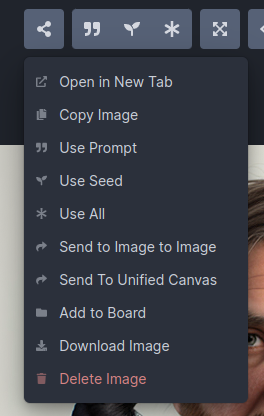
Textual Inversion, LoRA and ControlNet#
InvokeAI supports several different types of model files that extending the capabilities of the main model by adding artistic styles, special effects, or subjects. By mixing and matching textual inversion, LoRA and ControlNet models, you can achieve many interesting and beautiful effects.
We will give an example using a LoRA model named "Ink Scenery". This
LoRA, which can be downloaded from Civitai (civitai.com), is
specialized to paint landscapes that look like they were made with
dripping india ink. To install this LoRA, we first download it and
put it into the autoimport/lora folder located inside the
invokeai root directory. After restarting the web server, the
LoRA will now become available for use.
To see this LoRA at work, we'll first generate an image without it
using the standard stable-diffusion-v1-5 model. Choose this
model and enter the prompt "mountains, ink". Here is a typical
generated image, a mountain range rendered in ink and watercolor
wash:
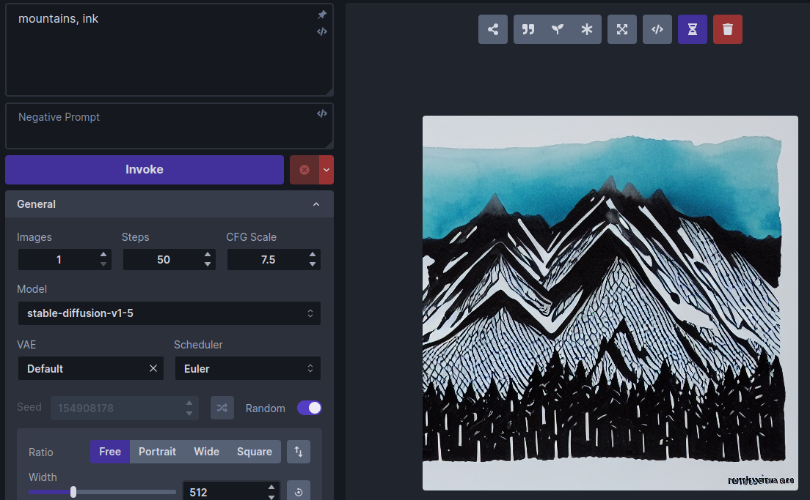
Now let's install and activate the Ink Scenery LoRA. Go to
https://civitai.com/models/78605/ink-scenery-or and download the LoRA
model file to invokeai/autoimport/lora and restart the web
server. (Alternatively, you can use InvokeAI's Web Model
Manager to download and
install the LoRA directly by typing its URL into the Import
Models->Location field).
Scroll down the control panel until you get to the LoRA accordion section, and open it:
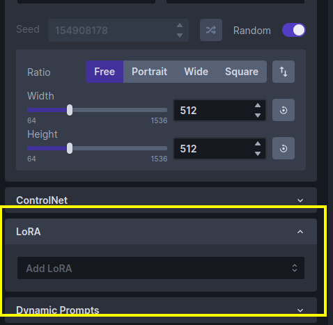
Click the popup menu and select "Ink scenery". (If it isn't there, then the model wasn't installed to the right place, or perhaps you forgot to restart the web server.) The LoRA section will change to look like this:
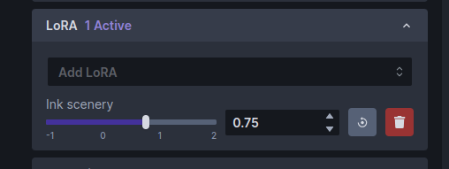
Note that there is now a slider control for Ink scenery. The slider controls how much influence the LoRA model will have on the generated image.
Run the "mountains, ink" prompt again and observe the change in style:
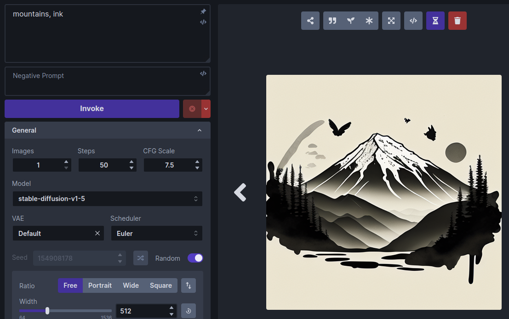
Try adjusting the weight slider for larger and smaller weights and generate the image after each adjustment. The higher the weight, the more influence the LoRA will have.
To remove the LoRA completely, just click on its trash can icon.
Multiple LoRAs can be added simultaneously and combined with textual inversions and ControlNet models. Please see Textual Inversions and LoRAs and Using ControlNet for details.
Summary#
This walkthrough just skims the surface of the many things InvokeAI can do. Please see Features for more detailed reference guides.
Acknowledgements#
A huge shout-out to the core team working to make the Web GUI a reality, including psychedelicious, Kyle0654 and blessedcoolant. hipsterusername was the team's unofficial cheerleader and added tooltips/docs.